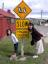

2006年3月28日 13時07分撮影
本格的なスキーは初めて！スキーウェアーはネェネェのおさがりで、
スキー靴と板はレンタルしました。似合ってるでしょ（ウフッ）！2006年3月26日 16時26分撮影
クラブメッドサホロで、ミニクラブの雪だるま競争に参加しました。
ひたすら雪をかき集めて、黙々と作業に取り掛かっていました。2006年2月18日 17時59分撮影
毎年楽しみにしている「カニづくし」。今回は奥谷ばあちゃんと一緒。
ビールを注いでる由起子。。。大きくなったよなあ。。。2006年2月12日 14時09分撮影
大神神社に提出した冬休みの書初め、、、
なんと優秀賞を頂きました（お習字習ってないのに頑張りました）2006年1月4日 15時31分撮影
とーっても広い「ＨＡＧＬＥＹ ＰＡＲＫ」 ３人で「松ぼっくり」を蹴って
公園出口に誰が一番早く着くか競争をしました。
最後に、由起子の松ぼっくりは「コマ」のようになってしまいました。2006年1月4日 10時56分撮影
この旅で、最後の町は「クライスト・チャーチ」。大聖堂が有名です。
街中は、公園が多く、少し車を走らせると見晴らしの良い丘へも
行けます。海岸沿いでは海水浴もできます。良い所だぁ〜。。。
2006年1月3日 10時46分撮影
オアマルでユニークな看板発見。思わず真似したくなる。
昨夜のペンギンの行進はとっても可愛かったね。。。2006年1月1日 18時09分撮影
オタゴ半島のダニーデンにて。旅行中、暇を見つけては縄跳びの
練習をしていた由起子。継続は力なり・・・ホント上手になりました2005年12月31日 15時11分撮影
ミルフォードサウンド。大晦日はミルフォードクルーズで過ごします。2005年12月31日 10時40分撮影
マナポウリ湖へのドライブ。思わず伸びをしたくなるのです。